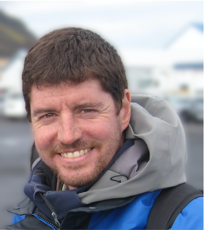

About
I am a senior researcher at the Cybersecurity Unit of RISE Research Institutes of Sweden.
My research interests include privacy-enhancing technologies and applied cryptography, and I enjoy working at the intersection of machine learning analytics and security or privacy.
Short Bio
Before, I was a post-doctoral researcher at École Polytechnique Fédérale de Lausanne (EPFL) working with Prof. Jean-Pierre Hubaux and Prof. Carmela Troncoso. I have a PhD from University College London (UCL) where I was advised by Prof. Emiliano De Cristofaro. During my PhD, I did research internships at the Alan Turing Institute and Telefonica Research. I received my MSc and BSc degrees from the Department of Computer Engineering and Informatics (CEID) in Patras, Greece. During my MSc, I worked as a researcher at the Computer Technology Institute and Press Diophantus (CTI) for the EU FP7 project ABC4Trust.